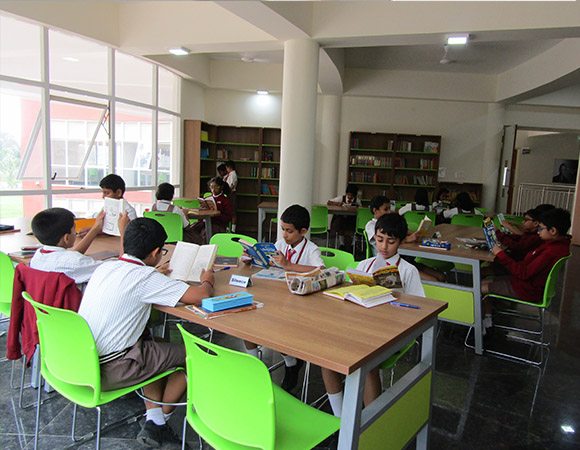
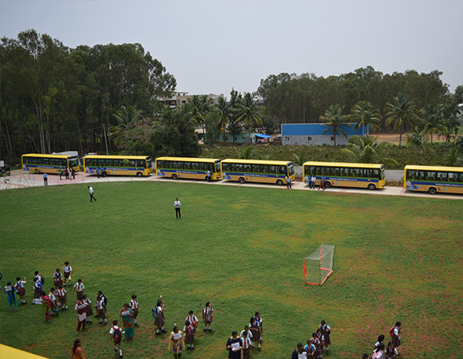
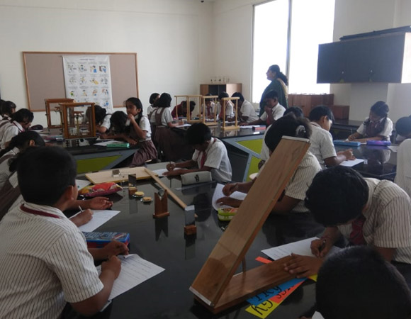
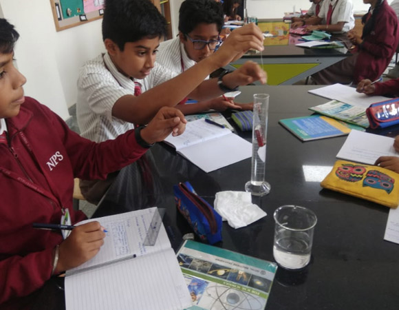
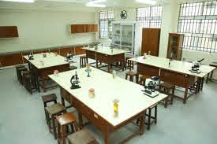
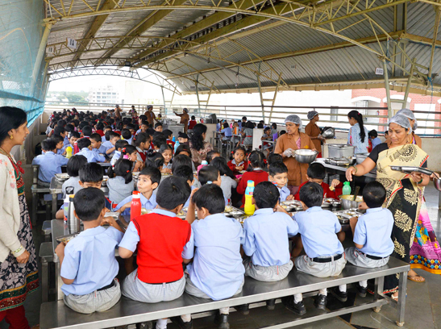

School Facilities
Our school is equipped with state of the art infrastructure incorporated with an affable environment- just everything a young growing bud needs! Established in 1980, our school has been an ever-growing educational hub gaining positive traction every consecutive year!
Our school has all the suitable amenities like a well-equipped library, a playground, science labs, transportation facilities, an auditorium and a hygeinic canteen.
Library

If an ‘office’ is the heart of an institution, a ‘library’ is its powerhouse. It is in a library that knowledge is stored in the form of books, novels, magazines, newspapers and periodicals. The National Public School's library is housed in a spacious room, with plenty of light and fresh air, opposite the Principal’s office in the administrative block. The library unlike other rooms in the school has an appealing ambiance. It has an identity and grace of its own. It lures you and tempts you to take a look, then you take a book, and then you keep coming back for more. When you enter our school library you can be sure and certain that you will never leave the place empty handed. You walk out wiser, enlightened and determined to complete the book you set out to read.
It is equipped with all kinds of reference and guide books for our students, which include numerous famous publications by well-known authors.The library also has storybooks and playbooks for our primary schoolers, and exciting scientific experiment books for our high schoolers.Our library is equipped with novels for students interested in dystopian fictions.
Sports Activities
The school has state of art Basketball and Volleyball courts. For the tiny tots the school has a play area with a host of equipments such as Slides, Swings, Joy Wheel, Parallel Bars and a Sand pit. Older children who are inclined towards sporting activities are trained under professional coaches in athletics, karate and team games. Specially trained coaches train the children in Volleyball and Basketball games. Numerous students have reached the State and National level. To inculcate a healthy spirit of competition while regulating school activities, students are divided into 4 houses named after the Greek Gods – Apollo, Hercules, Venus and Zeus. Besides this, there is an indoor sports room, where carrom, table tennis and chess are played. Karate is also taught here after school hours.
Science Labs
The National Public School of Bangalore has three well-equipped and sophisticated Physics, Chemistry and Biology labs to inculcate a more efficient approach of teaching the students in the practical division.
Physics Lab
The physics lab is equipped with apparatus like lenses, prisms, mirrors, projectors, slides, lamps, spectroscope and other optical instruments, physical balances, spring balances, oscillators (i.e. Pendulums), various thermometers, and all types of magnets.
Students enjoy conducting the experiments on the basis of the lessons taught to them and also have the liberty to implement their own ideas. Experiments are usually conducted in groups of 6-8 students although there is a constant emphasis on individual learning. The lab features good seating facility, ventilation, lighting, water supply etc., making it a perfect place of learning.
Chemistry lab

The chemistry lab is well equipped with all the required elements, compounds and a vivid range of apparatus and accessories to allow the students to conduct experiments successfully.Good ventilation, lighting, water and sink facilities, make the lab an ideal place to conduct experiments and learn.
Biology Lab

The biology lab of NPS' is well designed and arranged. It is equipped with a microscope and all the apparatus and containers needed for training the boys. Additionally, there are various chemicals and acids required for preservation and treatment of the specimens. Being well designed with good seating, light and water facilities, makes the lab far superior to that of many other institutions.
On display are many plastic and fibre illustrated models of animal and human body parts and also models of some types of poriferans. There are displays of skeletal models of pre-historic creatures, some animals and a complete human skeleton too. With respect to Avian Creatures, the lab contains a wide collection of beaks, foot, limbs, wings and vertebral columns of some animals and birds respectively.
In addition to all these, there are some rare biological specimens such as a test tube baby, life cycle of moths butterflies and toads, embryo form of a sea horse etc.
Transportation Facilities
The school has a fleet of modern buses that provide comfortable transport facilities to staff and students. A care taker looks after the comfort of all the children during travel.
Canteen

Children can now have a variety of mouth watering dishes, keeping in mind a balanced nutrition diet and above piping hot meals. The canteen is located within the school campus, with a clean and hygienic kitchen and expert cooks. Eating here will definitely improve the eating habits of children and help develop table manners. The children have already started eating meals and are happy and contented.